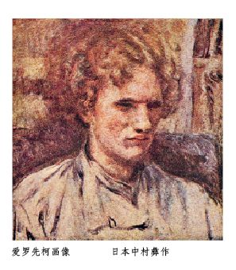
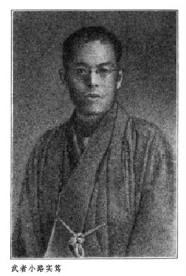

一切东西的发达，是从单纯进向复杂的。所以要明白或一事物的本质，便该先去追溯本源，回顾这在最真纯而且简单的原始时代的状态。
所谓生活着，即是寻求着。在人类的生活上，是一定有些什么缺陷和不满的。因此凡那力谋方法，想来弥补这缺陷和不满的欲求，也就可以看作生命的创造性。有如进了僧院，专度着禁欲生活的那修道之士，乍一看去，似乎是断绝了一切的欲求和欲望的了，但其实并不如此。他们是为更大的欲望所动，想借脱离了现世底的肉欲和物欲之类，以寻求真的自由和解放，而灵底地进到具足圆满的超然的新生活境里去。凡极端和极端，往往是相似的，生的欲求至于极度地强烈者，岂不是竟有将绝了生命本身的自杀行为，来使这欲求得以满足的时候么？
缺陷和不满者，就是生命的力在内底和外底两面都被压抑阻止着的状态，这也就是人类的懊恼的苦闷。个人的生活，是欲望和满足的无限的连续，得一满足，便再生出其次的新的欲望来，于是从其次又到其次，无穷无尽地接下去。人类的历史也一样，从原始时代以至今日，不，更向着未来永劫，这状态也还是永久地反复着的。
为想解脱那压抑所生的苦闷，寻求畅然地自由的生命的表现，而得到“生的欢喜”起见，原始时代的人类怎么做了呢？和文明的进步一同，我们的生活，也就在精神底和物质底两方面都增起复杂的度数来，所以在现代，以至在未来，和变化的增加一同，也越发加多复杂性。但人类生命的本来的要求既没有变，换了话说，就是在根本上并不变化的人间性既然俨然存在，则见于原始人类的单纯生活的现象，便是在现在，在未来，也还是永久地反复着的。
表示欧洲中世培内狄克（Benedikt）派道院的生活的话里，有一句是“祈祷和劳动”（orare et laborare）。这所指的生活，和在日本的禅院里，托钵的和尚将衣食住一切事；也和坐禅以及勤行一同，作为宗教底的修养，以虔敬的心，自行处理的事，是一样的。和这相仿的事，也可以想到作为人类而过了极简单的生活的那原始人类去。就是原始时代的人们，为要满足那切近的日常生活上的衣食住之类的物底欲求，去做打猎耕田的劳动，而一面又跪在古怪的异教的神们的座下，向木石所做的偶像面前叩头。在这时代，作为生命宇宙的发现，最显著地牵惹他们的眼睛的有两样。换句话，就是他们将这两者作为对象，而描写其“梦”。这两者就是日月星辰和作为性欲的表象的那生殖器。在露天底下起卧，无昼无夜地，他们仰看天体，于是梦着主宰宇宙的不变的法则，和无始无终的悠久的世界；也认知了人类所无可如何的绝大的无限力。又转眼一看自己，则想到身内燃烧着的烈火似的欲望，以性欲为中心，达于白热点。在为人类的生活意志的最强烈的表现的那食欲和性欲之中，他们又知道前者即使不完全，也还借劳动可以得到，后者的欲求却尤为强有力的东西了。因为在两性相交而创造一个新的生命，借此保存种族这一个事实之前，他们是不禁生了最大的惊叹的。
他们将这两个现象放在两极端，而在那中间，梦见森罗万象，对之赞颂，礼拜，唱赞美歌，诵咒文，做祈祷。将自己生命的要求欲望，向这些客观界的具象底的事物放射出去，以行那极其幼稚简单的表现。生的跃动，使他们在有限界而神往于无限界，使他们希求绝大的欲望的充足的时候，这就生出原始宗教的最普通的形式的那天然神教和生殖器崇拜教来。倘将那因为欲求受了制限压抑而生的人间苦，和原始宗教，更和梦和象征，加了联络，思索起来，则聪明的读者，就该明白文艺起源，究在那里的罢。在原始时代的宗教的祭仪和文艺的关系，诚然是姊妹，是兄弟。所谓“一切艺术生于宗教的祭坛”这句话的意思，也就可以明白了。无论在日本，在支那，在埃及、希腊，在印度、巴勒斯丁，或者在今日还是原始状态的蛮民的国土里，这种现象，都是可以指点出来的事实。
在原始状态的人类的欲求，是极其简单，而那表现也极其单纯。先从日常生活上的实利底的欲求发端，于是成立简单的梦。譬如苦于亢早，求雨心切的时候，偶然望见云霓，则他们便祈天；祈天而雨下，则他们又奉献感谢和赞美。谷物、牲畜为水害、风灾所夺的时候，则他们诅咒这自然现象，但同时也必至于非常恐怖，畏惧的罢。因为他们对于自然力，抵抗的力量很微弱，所以无论对于地水火风，对于日月星辰，只是用了感谢，赞叹，或者诅咒，恐怖的感情去相向，于是乎星辰、太空、风、雨，便都成了被诗化，被象征化的梦而被表现。尤其是，在原始人类的幼稚的头脑里，自己和外界自然物的差别是很不分明的，因此就以为森罗万象都象自己一般的活着，而且还要看出万物的喜怒哀乐之情来。殷殷的雷鸣，当作神的怒声，瞻望着鸟啼花放，便以为是春的女神的消息。是将这样的感情，这样的想象，作为一个摇篮，而诗和宗教这双生子，就在这里生长了。
比这原始状态更进一步去，则加上智力的作用，起了好奇心，也发生模仿欲。而且，先前的畏敬和恐怖，一转而为无限的信仰，也成为信赖。无论看见火，看见生殖器，看见猴子臀部的通红的地方，都想考究那些的由来，加上理由去，而终于向之赞颂，渴仰、崇拜。寻起根本来，也就是生命的自由的飞跃因为受了阻止和压抑而生苦闷，即精神底伤害，这无非就从那伤害发生出来的象征的梦。是不得满足的欲求，不能照样地移到实行的世界去的生的要求，变了形态而被表现的东西。诗是个人的梦，神话是民族的梦。
从最为单纯的原始状态看起来，祈祷礼拜时候的心绪，和在文艺的创作鉴赏时候的心境，是这样明白地有着一致，而且能够看见共通性的。

仓十月的秋暖之日，厨川夫人和矢野君和我，站在先生的别邸的废墟上，沉在散漫的思想中的时候，掘土的工人寻出一个栗色纸的包裹，送到我们这里来了。那就是这《苦闷的象征》的原稿。
《苦闷的象征》是先生的不朽的大作的未定稿的一部分。将这未定稿遽向世间发表，在我们之间，最初也曾经有了不少的议论。有的还以为对于自己的著作有着锋利的良心的先生，怕未必喜欢这以推敲未足的就是如此的形式，便以问世的。
但是，本书的后半，是未经公表的部分居多。将深邃的造诣和丰满的鉴赏的力量，打成不可思议的融合的先生在讲坛上的丰采，不过在本书里，遗留少许罢了。因了我们不忍深藏筐底的心意，遂将这刊印出来。
题名的《苦闷的象征》，是出于本书前半在《改造》志上发表时候的一个端绪。但是，只要略略知道先生的内生活的人，大约就相信这题名用在先生的著作上，并没有什么不调和的罢。因为先生的生涯，是说尽在雪莱的诗的“They learn in suffering what they teach in song.”这一句里的。
当本书校订之际，难决的处所，则请教于新村出、阪仓笃太郎两先生。而且，也受同窗的朋友矢野峰人氏的照应，都在此申明厚的感谢的意思。
本书中的《创作论》分为六节，虽然首先原有着《两种力》、《创造生活的欲求》等的标记，但其余的部分，却并未设立这样的区分。不得已，便单据我个人的意见，分了节，又加上自信为适当的标题。此外关于本书的内容和外形，倘有些不备之处，那就是因为我的无知无识而致的：这也在此表明我的责任。
十三年二月二日，山本修二。
这是些美丽可爱的姑娘们中的一个，好象运命的舛错，生在一个员司的家里。她没有妆奁，也没有别的希望，又没有一个法子让一个体面而且有钱的人结识，了解，爱惜，聘娶；她只得嫁了一个教育部的小书记。
她是朴素不能打扮，但是可怜如同一个破落户似的；因为妇女们本没有门第和种族的分别，她们的美貌，她们的丰姿和她们的妖冶就是她们的出身和家世。她们天生的聪颖，她们高雅的本能，她们性情的和蔼，乃是她们唯一的资格，可以使平凡的女子与华贵的夫人平等。
她觉得生来就是为过一切的雅致和奢华的生活，因此不住的痛苦。她痛恨住所的贫寒，墙壁的萧索，坐位的破烂，幔帐的简陋。这些东西，在别的同她一样等级的妇人一点看不出，使她忧愁和使她愤怒。小女仆做她粗糙的杂事的影子竟引起她悲哀的感慨和狂乱的梦想。她梦想那些寂静的前厅，悬挂着东方的壁衣，高大的古铜灯照耀着，还有两个短裤的仆人，躺在宽大的椅中，被暖炉的热气烘得他们打盹儿。她幻想那些阔大的客厅里，装璜着那古式的锦幕，精巧的木器，还陈设些珍奇的古玩，和那些雅洁，清馨的小客室，为下午同一般最亲密的朋友，或为一般女人最仰慕，最乐于结识的男子们谈话之所。
当她坐下，吃晚饭的时候，在蒙着一块三天没洗的台布的圆桌前边，对面，她的丈夫掀起汤锅来，面带惊喜的神气：“呵！好香的肉汤！我觉得没有再比这好的了……”她就梦想到那些精致的晚餐，晶亮的银器，挂在墙上古代人物的和仙林奇异禽鸟的壁毯；她就梦想到上好的盘碟盛着的佳肴，又梦想到一种狡然微笑的听着那情话喁喁，更梦想到一边吃着鲈鱼的嫩肉或小鸡的翅膀。
她没有服装，没有珠宝，一无所有。然而她正是喜爱这些；她自己觉着生来是合于这些的。她极想望娇媚，得人艳羡，能够动人而脱俗。
她有一个阔朋友，在修道院时的一个同伴，她再不想去看望的了，看望回来她多么苦痛。她整天的哭，因为忧愁、悔恨、绝望和贫乏。
然而，一天晚上，她的丈夫回来，得意的神气手里拿着一个宽信封。
——看呀，他说，这里有点东西为你的。
她赶紧拆开信封，抽出一张印字的请柬，上面写着这些话：
“教育总长与柔惹朗伯那夫人恭请路娃栽先生及其夫人于一月十八日星期一惠临教育部礼堂夜会。”
她本该喜欢，象她的丈夫所想那样，但她忿然把请柬掷在桌上，嘟哝着：
——你要我把这怎样办呢？
——但是，我的亲爱的，我原想着你必喜欢。你从不出门，而这却是一个机会，这个，一个最好的！我多么费事才得到它。人人都惦记这个的：这是很难寻求并且不常给书记们。你在那儿可以看见一切的官员。
她用恼怒的眼睛瞧他，不耐烦的发作了：
——你打算让我身上穿什么去呢？
他没有料到这个；结结巴巴的说：
——就是你上戏园子穿的那件衣裳。我觉得很好，依我……
他住了口，惊愕，惶恐，因为见他的妻子哭了。两颗大的泪珠慢慢的顺着眼角流到嘴角来了。他吃吃的说：
——你怎么了？你怎么了？
但是，使着强烈的压力，她制住了她的悲痛并擦干她的潮湿的两腮，用平和的声音回答：
——没有什么。只是我没有服装所以我不能赴这宴会。把你的请柬送给别的同事他那妻子比我打扮的好的吧。
他难受了。于是说：
——比如，马底尔得。那得值多少钱呢，一身合式的衣服，让你在别的机会也还能穿的，要那最简素的东西？
她想了几秒钟，合计妥了并且还想好她能够要的钱数而不致招出这省俭的书记当时的拒绝和惊骇的声音来。
末了，她迟疑着答道：
——我不知道的确，但是我想差不多四百弗郎我可以办到。
他脸色有点白了，因为他正存着这么一笔款子为是买一杆猎枪好加入打猎的团体，到夏天，在南代尔平原，星期的日子，同着几个朋友在那儿打白鸽。
然而他说：
——就是罢。我给你四百弗郎。但是该当有一件好看的长衫。
宴会的日子近了，但路娃栽夫人好象是郁闷，不安，忧愁。然而她的衣服却是做齐了。她的丈夫一天晚上对她说：
——你怎么了？看看，这三天来你是非常的奇怪。
她就回答道：
——所让我发愁的是没有一件首饰，连一块宝石都没有，没有可以戴的。我处处带着穷气。我很想不赴这宴会。
他于是说：
——你戴上几朵鲜花，在现在的节季这是很时兴的。化十个弗郎你就能买两三朵鲜艳的玫瑰。
她还是不听从。
——不……在阔太太们群里透着穷气是再没有那么寒碜的了。
她的丈夫大声说：
——你多么愚呀！去找你的朋友佛来思节夫人向她借几样珠宝。你同她很亲近，能做到这点事的。
她发出惊喜的呼声。
——真的。我倒没有想到这儿。
第二天她到她的朋友家里，向她述说她的困难。
佛来思节夫人走近她的嵌镜子的衣柜，取出一个宽的匣子拿过来，打开它，于是对路娃栽夫人说：
——挑吧，我的亲爱的。
她先看了几副镯子，后来是一挂珍珠的项圈，随又看见一支维尼先式的宝石和金镶的十字架，确是精巧的手工。她在镜子前边试这些首饰，犹豫了，舍不得把它们离开，把它们退还。她总是问：
——你再没有别的了么？
——还有呢。找呵。我不知道那样合你的意。
忽然她发见在一个青缎子的盒子里，一挂精美的钻石项链；她的心不能不因极度的愿望而跳起了。她两手拿的时候哆嗦了。她把它系在脖子上，在她的高领的长衣上，她甚至于站在自己面前木然神往了。
随后，她问，迟疑着，又很着急：
——你能借给我这样么，只要这样？
——自然，一定能的。
她搂住她的朋友的脖子，狂热的亲她，跟着拿起她的宝物就跑了。
宴会的日子到了。路娃栽夫人得了胜利。她比一切妇女们都美丽，雅致，风流，含笑而且乐得发狂。所有的男子都看她，打听她的名姓，求人给介绍。所有阁员们都愿和她跳舞。就是总长也注意她了。
沉醉的疯狂的跳舞，快乐得眩迷了，在她的美貌的得意里，在她的成功的光荣里；在那一切的尊敬，一切的赞美，一切的妒羡和妇人的心中以为是最美满最甜蜜的胜利所合成的幸福的云雾里，她什么都不想了。
她在天亮四点钟才动身。她的丈夫，从半夜里，就和三位别的先生，他们的妻子也都是作乐的，在一间空寂的小客室里睡了。
他把他带的为临走穿的衣服给她披在肩膀上，这是家常日用的朴素的衣服，同跳舞的衣服比着自然显得寒碜。她觉出来便想赶紧走，好让那些披着细毛的皮衣的夫人们不能看见。
路娃栽把她拉住：
——等等呵。你到外边要着凉的。我去叫一辆马车罢。
但她一点也不听他的。赶忙的就下了楼梯。等他们到了街上，没有看见一辆车；于是满处找，远远的看见车夫就喊。
他们顺着赛因河走去，失望，颤抖。终于在河岸上他们找着一辆拉晚的破马车，在巴黎只有天黑才能看得见，好象在白天它们羞愧自己的破烂似的。
车把他们一直拉到他们的门口，马丁街中，他们败兴的进了家。在她呢，这是完了。他呢，他就想着十点钟须要到部里去。
她脱下她披在肩膀上的衣服，站在镜子前边，为是乘着在这荣耀里，她再自己照一照。但是猛然她喊了一声。她没有了在她脖子上的项链了。
她的丈夫，已经脱了一半衣服，就问：
——你有什么事情？
她转身向着他，昏迷了：
——我……我……我没了佛来思节夫人的项链了。
他直着身子，慌乱了。
——什么！……怎样！……这绝不能够！
于是他们在长衫折里寻找，在大衣折里，在各处的口袋里。他们竟没有找到。
他问：
——你确信离跳舞会的时候你还有它么？
——是的，在部院的门口我还摸它呢。
——但是如果你要丢在街上，我们总听得见它掉的。这必落在车里了。
——是的。这准是的。你记得车的号码么？
——没有。你呢，你没有看过么？
——没有。
他们惊慌的对望着。末后路娃栽再穿起衣服。
——我去，他说，把我们步行经过的路再踏勘一遍，看我或许找着它。
他出去了。她穿着晚装呆怔着，没有睡觉的力气，只倾倒在一把椅子上，没有心思，也没有计划了。
七点钟她的丈夫回来了。他什么也没有找着。
他到警察厅，到各报馆，为是悬赏寻求，到那各车行，总之有一线希望之处他都去到了。
她整天的等候着，始终在惊恐的状态里望着这不幸的灾祸。
路娃栽晚上回家，脸上苍白，瘦弱；他一无所得。
——该当，他说，给你的朋友写信说你把她的项链弄坏了，你正给她收拾呢。这样能容给我们找的工夫。
她照他所说的写去。
到了一个星期，他们所有的希望绝了。
路娃栽，似老去了五年，决然说：
——该当想法赔偿这件首饰了。
第二天他们拿了盛项链的盒子，便到这盒里所有的字号的宝石商人的店里。他就查他的帐簿：
——太太，这不是我卖的这挂项链；我只卖了这个盒子。
于是他们就从这家珠宝店绕到那家珠宝店，找一挂合先前的同样的，又查人家的旧帐，两个人都忧愁，苦恼坏了。
在宫殿街的一家铺子里，他们看见一挂钻石项链正和他们所要找的一样。它价值四万弗郎。人家让他们三万六千弗郎。
他们求这宝石商人三天以内不要卖出它去。他们又订了约，如果那一挂在二月底以前找着，那么他再退出三万四千弗郎把这挂收回。
路娃栽存有他的父亲遗留的一万八千弗郎。其余的他去借。
他去摘借，向这一个借一千，那一个借五百，从这儿借五个路易，那儿三个路易。他立些债券，订些使他破产的契约，合一些吃重利的人和所有各种放帐的摘借。他陷于最窘迫的地位了，冒险签他的名字而并不知道他能保持他的信用不能，并且，被未来的烦恼，将要临到他的身上的黑暗的前途，物质匮乏的忧愁和一切精神上的痛苦恐吓着，他把三万六千弗郎放在商人的柜台上，取去新的项链。
路娃栽夫人给佛来思节夫人拿去了项链，她一种冷淡的样子对她说：
——你该当早一点还我，因为我先要用的。
她没有打开盒子，这正是她的朋友担心的地方。如果她要看出来更换了，她将怎样想呢？她将怎样说呢？她不把她当一个贼么？
路娃栽夫人晓得穷人的艰难生活了。她又，猛然，勇敢的打定了她的主意。该当偿还这笔可怕的债务。她去偿还。于是辞退了女仆；迁了住所，赁了一间楼顶上的小屋。
她晓得家里一切粗笨的工作和厨房里的讨厌的杂事了。她刷洗碟碗，用她粉嫩的指尖摸那油腻的盆沿和锅底。她淍洗脏衣服、衬衣和搌布，她晒在一条绳子上；见天早晨，她提下秽土到街上，再提上水去，每上到一层楼她就站住喘气。而且，穿得象一个穷苦的女人，她到果局里，杂货店里，肉铺里，胳膊上挎着篮子，争价钱，咒骂着，一个铜子，一个铜子的俭省她那艰难的钱。
月月须得归一拨债券，再借些新的，好延长时日。
她的丈夫晚上工作，给一个商人誊写帐目，常常的，在夜间，他还钞那五个铜子一篇的誊录。
这种生活延迟了十年。
到了十年，他们都偿还了，连那额外的利息，和积欠的原利全都清了。
路娃栽夫人现在见老了。她成了一个粗鲁的，强壮的，严恶的和穷家的妇人了。蓬着头，拖着裙子和通红的手，她说话高声，用很多的水刷洗地板。但是时常，当她丈夫在办公处的时候，她便独自坐在窗前，便回想到从前的那天晚上，她是多么美丽，多么受欢迎的那一次的跳舞会。
倘那时她没有丢掉那挂项链后来该当是怎样呢？谁知道呢？谁知道呢？人生是怎样的奇怪和变幻呵！极微细的事就能败坏你或成全你！
恰巧，一天星期，她到乐田路去闲游，为舒散这一星期的劳乏，她忽然看见一个妇人领着一个孩子散步。原来是佛来思节夫人依旧年青，好看，动人。
路娃栽夫人很觉感动。她和她去说话么？是说的，一定要说的。而且现在她都还清了，她都要告诉她。为什么不呢？
她走近前去。
——好呀，娇娜。
那一个一点也不认识她了，非常惊讶被一个妇人这样亲昵的叫着。她磕磕绊绊的说：
——但是……太太！……我不知……你一定是认错了。
——没有，我是马底尔得路娃栽。
她的朋友呼了一声：
——呵！……我的可怜的马底尔得，你怎么改变得这样了！……
——是的，不见你以后，我过了很久苦恼的日子，经过多少的困难……而且都是因为你！……
——因为我……这怎么讲呢？
——你必记得你借给我的那挂为赴教育部宴会的项链。
——是呀。怎么样呢？
——怎么样，我把它丢了。
——怎么！然而你已经还了我了。
——我还了你一挂别的完全相同的。你看十年我们才把它还清。你知道那对于我们这什么也没有的人是不容易的……不过那究竟完了，我倒是很高兴了。

佛来思节夫人怔了。
——你是说你买了一挂项链赔我的那一挂么？
——是呵。你会没有看出来，呵？它们是很一样的。
于是她带着骄傲而诚实的喜悦笑了。
佛来思节夫人，感动极了，拉住她的两只手。
——哎！我的可怜的马底尔得！然而我的那一挂是假的。它至多值五百弗郎！……